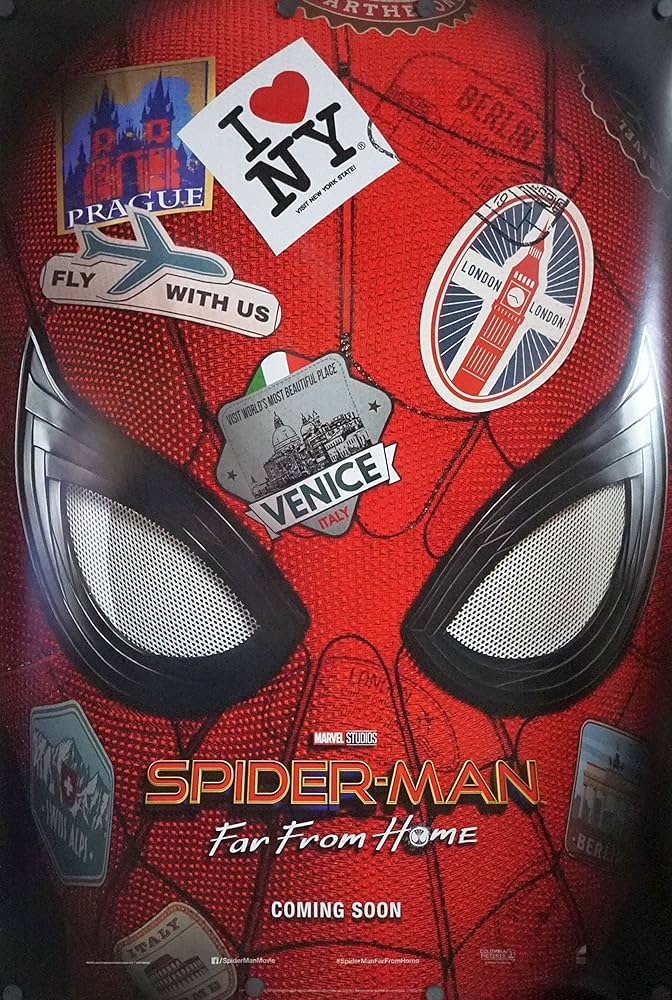

My favorite childhood memory would be when me and my mom would go To our uncle's house out in fresno. it would be a long car trip that usually went past night. I would always look out of the window looking at the stars if I did not fall asleep. we would always bring the two dog's with us. One of the best parts about it was the quiet or music filled atmasphere that was always created when we would go especily when we got there.
